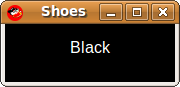

The Shoes Manual
Background
A background is a color, a gradient or an image that is painted across an entire slot. Both backgrounds and borders are a type of Shoes::Pattern. 
Even though it's called a background, you may still place this element in front of other elements. If a background comes after something else painted on the slot (like a rect or an oval,) the background will be painted over that element.
The simplest background is just a plain color background, created with the background method, such as this black background:
Shoes.app do
background black
end
A simple background like that paints the entire slot that contains it. (In this case, the whole window is painted black.)
You can use styles to cut down the size or move around the background to your liking.
To paint a black background across the top fifty pixels of the window:
Shoes.app do
background black, :height => 50
end
Or, to paint a fifty pixel column on the right-side of the window:
Shoes.app do
background black, :width => 50, :right => 50
end
Since Backgrounds are normal elements as well, see also the start of the Elements section for all of its other methods.
Yanks out the color, gradient or image used to paint this background and places it in a normal Shoes::Pattern object. You can then pass that object to other backgrounds and borders. Reuse it as you like.
Next: Border